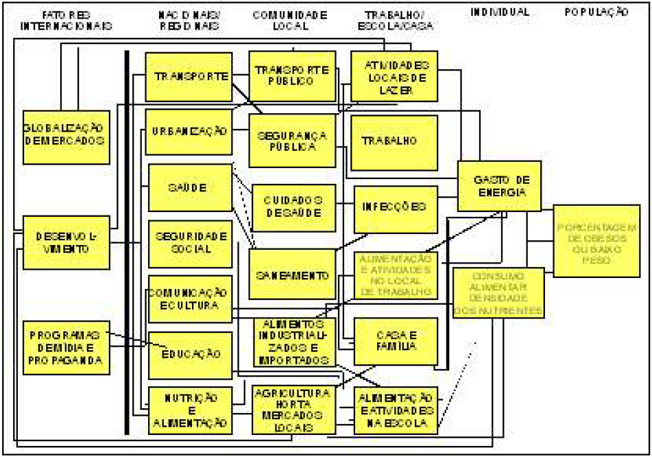

Atualmente, no Brasil, o ganho de peso e a
obesidade representam uma ameaça
crescente à saúde, constituindo um desafio
para os profissionais da área. Para a
prevenção e o controle desse problema,
necessita-se de uma abordagem integrada
que contemple os vários fatores envolvidos na
gênese da obesidade. O diagrama ao lado
explicita os diferentes níveis de determinação
da obesidade. Tendo-se como base esse
diagrama,

Cadernos de atenção básica – obesidade, p. 18 (com adaptações).
é correto inferir que
-
a forma hierárquica é a que permite
melhor avaliar os fatores relacionados a
prevenção e controle do ganho de peso e
da obesidade.
-
existe uma rede de fatores que expressam
as múltiplas interações entre saúde,
mercado global de alimentos, mídia,
processos de urbanização, perfil de educação e acesso aos transportes e ao lazer.
-
é preciso interromper o processo de globalização para que seja possível controlar a epidemia da obesidade.
-
abordagens de prevenção e controle da obesidade bem-sucedidas, tanto no âmbito individual quanto no coletivo,
devem ser focalizadas em estratégias comportamentais.
-
o consumo de alimentos com elevada densidade energética representa, segundo o diagrama, o principal fator
relacionado à obesidade na população.